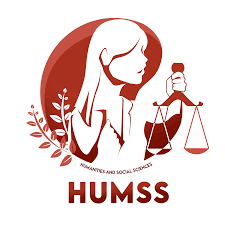
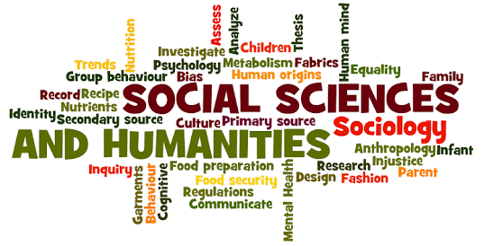
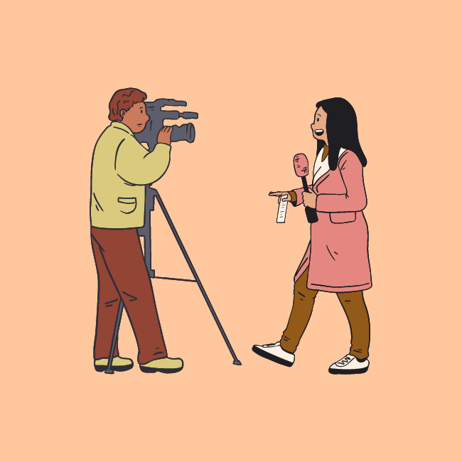

Rosales National High SchoolRosales National High School
Rosales National High SchoolRosales National High SchoolHome About Faculties Academic Tracks TVL Tracks Events Log out
|  |  |  |
|---|
Humanities and Social Sciences (HUMSS) is a strand offered to senior high school students under the Academics track. The HUMSS Senior High School strand is designed for students who intend to take up journalism, communication arts, liberal arts, education, and other social-science related courses in college.
Literary Art:
* BFA Creative Writing.
* BA Philippine Studies.
* BA Literature.
* BA Journalism.
Media Studies:
* BA Communication Arts.
* BA Cultural Studies.
* BA Multimedia Arts.
* BA Information Design.
Social Science:
* BS Political Science.
* BA Sociology.
* BA/BS Psychology.
* BA Anthropology.
* BA Philosophy.
* BA History.
International Studies:
* BS Diplomacy and International Relations.
* BS Development Studies.
* BS Economics.
* BS Global Politics.
* BA International Studies.
all credits goes to bukas.ph
* Sociology.
* Literature.
* Education.
* Economics.
* Journalism.
* Philosophy.
* Psychology.
* Political Science.
* Communication Arts.
* International Studies.
* Languages (English and Filipino).